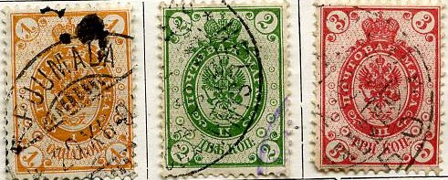
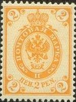
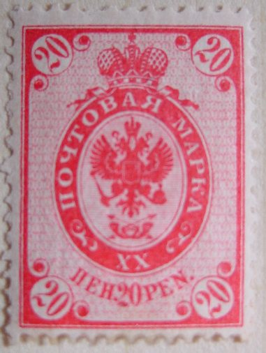
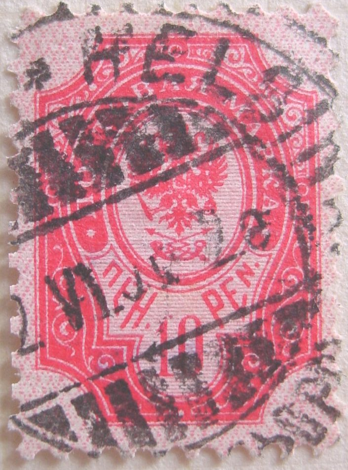

Return To Catalogue - 1856 issue - 1860-1874 issues - 1875-1890 issues - 1917 onwards - Aunus - Carelia - Local issues for Helsingfors and Tammerfors - Miscellaneous
Note: on my website many of the
pictures can not be seen! They are of course present in the
catalogue;
contact me if you want to purchase the catalogue.



1 Kop orange 2 Kop green 3 Kop red 4 Kop red 7 Kop blue 10 Kop blue 14 Kop blue and red 20 Kop blue and red 35 Kop lilac and green 50 Kop lilac and green 1 Rub brown and orange 3 Rub 50 Kop black and grey 7 Rub black and yellow
An error exists: 3 Rub 50 kop black and yellow instead of black and grey.
Value of the stamps |
|||
vc = very common c = common * = not so common ** = uncommon |
*** = very uncommon R = rare RR = very rare RRR = extremely rare |
||
| Value | Unused | Used | Remarks |
| 1 k | * | * | |
| 2 k | * | * | |
| 3 k | * | * | |
| 4 k | * | * | |
| 7 k | * | c | |
| 10 k | ** | ** | |
| 14 k | * | * | |
| 20 k | ** | * | |
| 35 k | *** | *** | |
| 50 k | *** | *** | |
| 1 R | *** | *** | |
| 3 1/2 R | RR | RR | Misprint: 3 1/2 R black and yellow: RRR |
| 7 R | RR | RR | |
The watermark seen on part of a sheet of 7 R stamps.
Fournier has made forgeries of these stamps, examples:


Fournier offered these forgeries as 1st choice in his 1914 pricelist for 4 Swiss Francs (both values). He also offeres the misprint 3 1/2 R black and yellow for 2 Swiss Francs. These forgeries are quite good, fortunately they can be recognized by the cancels: only the following four cancels exist (the dates are always the same):
(Fournier forged cancels, reduced size)
Tampere As Tammerfors R (+Russian town name) 8 V 98 41
Wiborg Wiipuri 11 XI 97 9b
Kuopio (+Russian town name) 1 IV 98 3 1
Helsingfors Helsinki (+Russian town name) 5 III 00
It seems that Fournier used paper from the larger margins of Russian stamp sheets. More information about these forgeries can be found at: http://jiv.dk/finland/fake.htm or http://personal.inet.fi/surf/hff/fournier.html.
Other forgeries, made from cheaper Russian stamps, but by 'adding in' the rings also exist.
Envelopes also exist with little circles added in the design for Finland:
I have also seen a 1 k orange and 2 k green (both with only little circles above the design and not below) in the same design. A 10 k blue and 20 k blue in a slightly different design (same as Russia, but with circles added in the corners) also exist. Finally a 14 k blue (similar to the postal stationery of Russia) with little circles above and below the design exists.



2 Pen orange 5 Pen green 10 Pen red 20 Pen blue 40 Pen lilac and blue (1911) 1 M lilac and green 10 M black and green
Similar types were issued in Russia. For the specialist, the 2 p, 5 p, 10 p, 20 p and 1 M are perforated 14 1/2 x 15. The 40 p is perforated 14. The 10 M exists with perforations 13 1/2 and 14 1/2. Postal forgeries of the 10 p and 20 p exist (see there) with perforation 11 1/2. There are small differences in the stamps, (different plates), except for the 40 p, caused by the fact that these stamps were printed by three different printers: Tilgmann & Co (Finland), Berthold (Berlin) and Lilius & Herzberg (Finland, only 10 and 20 p).
Value of the stamps |
|||
vc = very common c = common * = not so common ** = uncommon |
*** = very uncommon R = rare RR = very rare RRR = extremely rare |
||
| Value | Unused | Used | Remarks |
| 2 p | c | c | |
| 5 p | c | vc | |
| 10 p | c | vc | |
| 20 p | * | vc | |
| 40 p | * | c | 1911 |
| 1 M | ** | c | |
| 10 M | R | *** | |
'Gerknäs.' line cancel (two sizes) and 'GERKNÄS' line cancel
A Fournier forgery exists of the 10 M value.
This is a Fournier forgery; it has comb perforation, while
genuine stamps have line perforation (the vertical and horizontal
perforation matches in the corners)
(The cancel used on the above forgery, 'Kuopio 1 IV 98 3 1',
reduced size)
Genuin 10 M stamps have comb perforation (thus the horizontal and vertical perforation matches in the corners of the stamp). The Fournier forgeries have line peforation (the perforation doesn't match).
The printer Tilgmann (responsable for the
printing of the genuine stamps), made illegaly reprints of the 10
p and 20 p stamps. These stamps have the wrong perforation 11 1/2
instead of 14 1/2 x 15. Though they were intended to deceive
collectors, they are known to have been used on genuine letters
(rare). Sorry, I have no picture of these forgeries.
From the same source 'misprints' in the wrong colour are known of
the values 2 p green, 5 p yellow, 10 p blue, 20 p red and 10 M
black and yellow, and a 1 M with no center, example:

(a 'misprint': 20 p red, image obtained thanks to Marko Ylostalo,
Finland)
The Philatelic Record of April 1901, page
109 says about these 'errors':
"Finland Errors: A Warning. Collectors and dealers are
warned against buying so-called errors of the new issue of
Finnish stamps which are being offered by printed circular. These
consist of the 1 mark stamps with misplaced centre, also with
centre missing; the 2 penni printed in green instead of orange ;
the 5 penni printed in orange instead of green ; the 10 penni
printed in blue instead of red ; and the 20 penni stamp printed
in red instead of blue. Messrs. Whitfield King & Co. have
received information that these stamps are quite unofficial, and
have been purposely made by the printers as a private
speculation, without the knowledge or consent of the authorities,
and are therefore entirely spurious."
10 p

(Left and middle postal forgery, right genuine)
This postal forgery has perforation 11 1/2 (genuine 14 1/2 x 15), it has very thin ornamental design compared to the genuine stamp. The white letters seem to be thinner. The upper part of the '1' is very thin. The lowest feathers on the left hand side are joined together. The eagle's crown seems to be too close to the elliptic border and the tail too close to the arrows below it. This forgery has been described in 'Postal Forgeries of the World' by H.G. Leslie Fletcher.
20 p

(Left forgery, right genuine)
Two Majlund forgeries of the 20 p value
The above forgery also has the wrong perforation. Note that there are also many differences in the design I do not know if this forgery has ever been used on a real letter.

2 Pen orange 5 Pen green 10 Pen red 20 Pen blue
Similar types were issued in Russia. For the specialist, the 2 p, 5 p, 10 p and 20 p are perforated 14. There are 3 types of the 10 p; differing in the distance of the outer border line from the rest of the design and the coarseness of the lines in the background (in the vertical lines just above the left '10', just below the hanging leaf).

The three types of the 10 p, the vertical lines are different
just above the circular ring surrounding the left '10'. In the
last stamp, the outer frameline is placed much closer to the
design.
Value of the stamps |
|||
vc = very common c = common * = not so common ** = uncommon |
*** = very uncommon R = rare RR = very rare RRR = extremely rare |
||
| Value | Unused | Used | Remarks |
| 2 p | c | c | |
| 5 p | c | vc | |
| 10 p | c | vc | |
| 20 p | * | vc | |
{kind=link}
{kind=link}